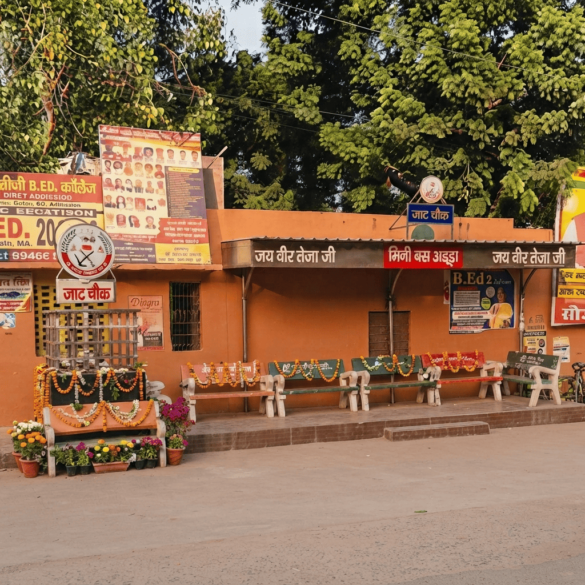
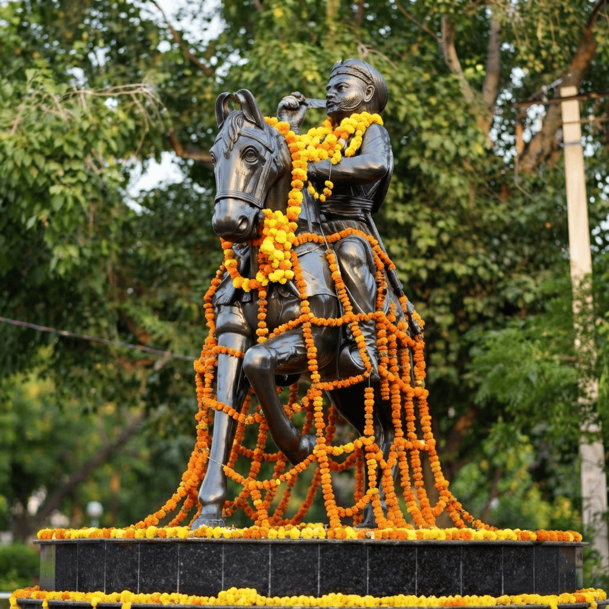
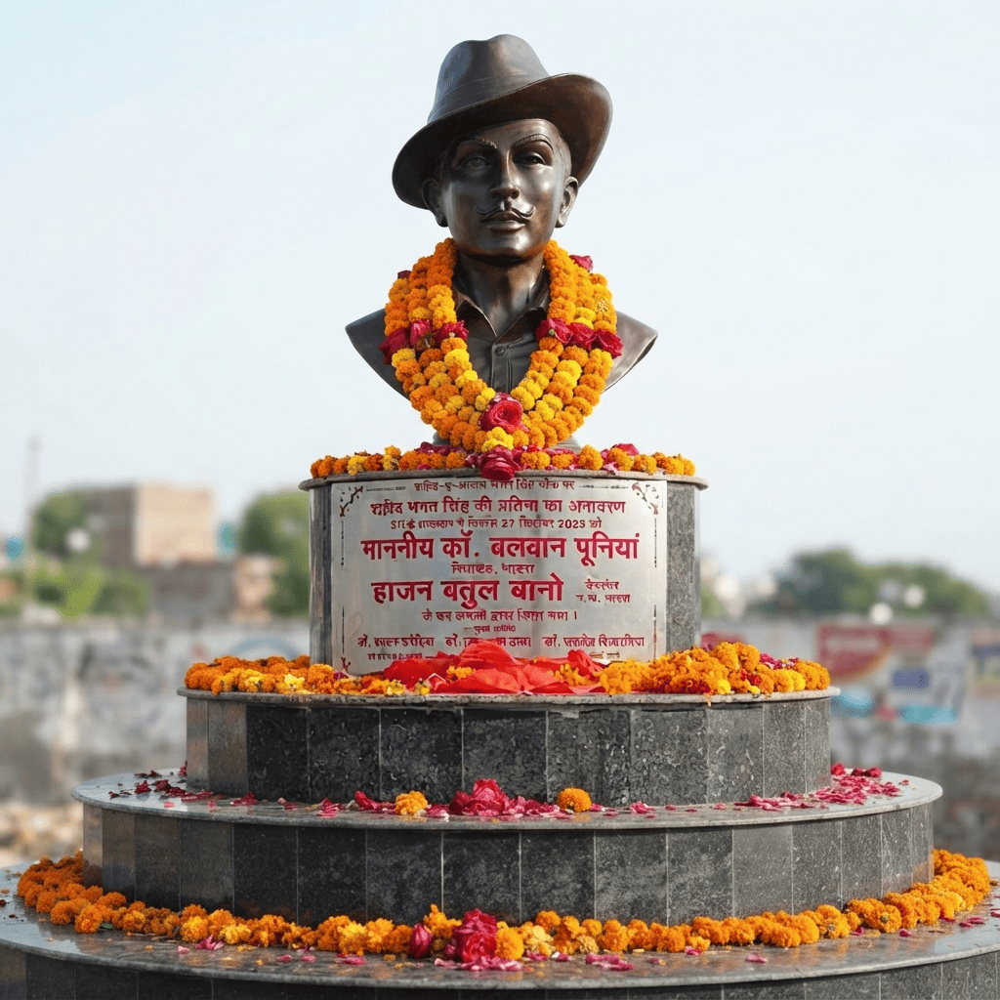
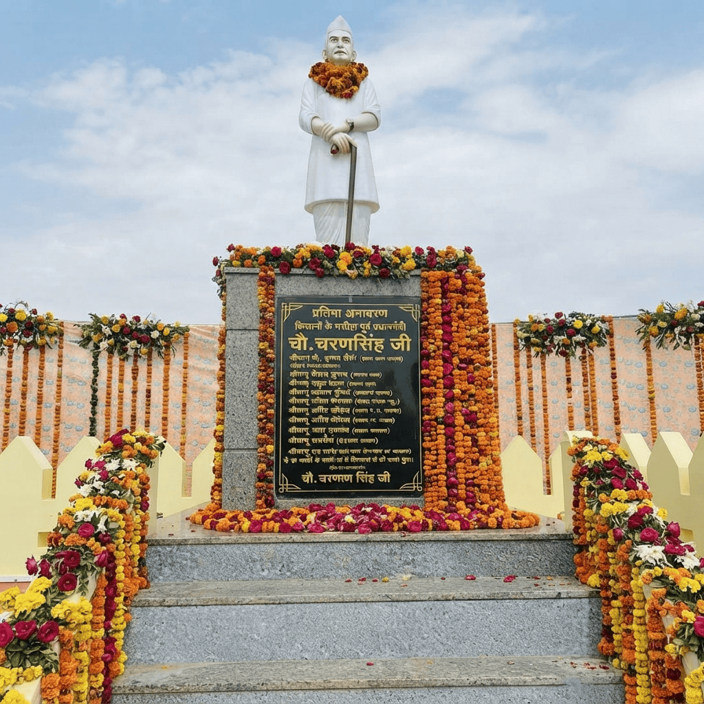
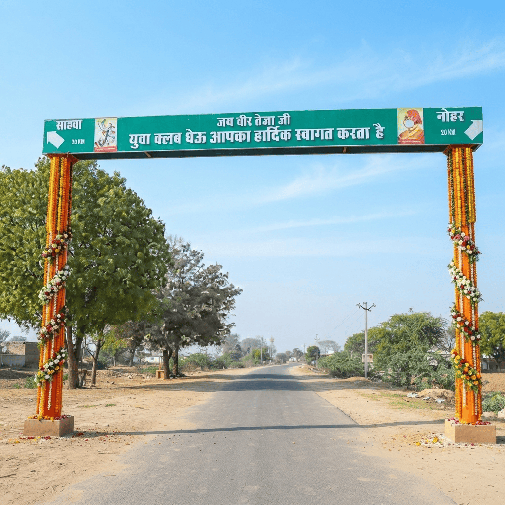
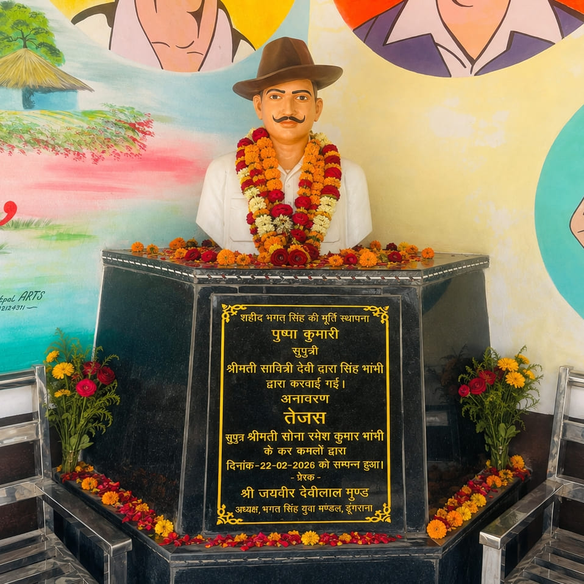
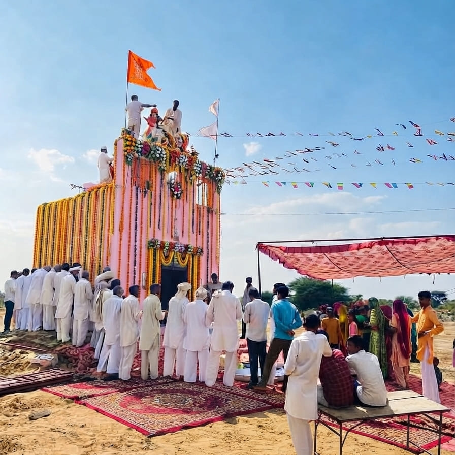

भादरा की गौरवशाली पहचान: प्रमुख स्मारक, चौक एवं प्रवेश द्वार
यह डिजिटल पृष्ठ भादरा शहर (जिला हनुमानगढ़, राजस्थान) और उसके आसपास के ग्रामीण क्षेत्रों में स्थापित जाट समाज से संबंधित उन सभी ऐतिहासिक स्मारकों, चौकों और प्रवेश द्वारों को आदरपूर्वक समर्पित है, जो हमारे महान महापुरुषों, किसानों के मसीहाओं और लोक देवताओं के अदम्य शौर्य, बलिदान, संघर्ष एवं उच्च आदर्शों के जीवंत प्रतीक हैं। ये सभी स्थल न केवल हमारी समृद्ध सांस्कृतिक विरासत को संजोए हुए हैं, बल्कि आने वाली पीढ़ियों के लिए निरंतर प्रेरणा का मुख्य स्त्रोत भी हैं। यहाँ आप समाज के सामूहिक प्रयासों और सहयोग से निर्मित इन सभी प्रमुख और दर्शनीय स्थलों के बारे में संपूर्ण एवं विस्तृत जानकारी प्राप्त कर सकते हैं।

1. जाट चौक, भादरा
नगरपालिका के समीप, रेलवे स्टेशन रोड, भादरा

2. महाराजा सूरजमल चौक, भादरा
अनाज मंडी के समीप, सिरसा रोड, भादरा

3. शहीद भगत सिंह चौक, भादरा
वीडीएस पैलेस के समीप, भादरा

4. चौधरी चरण सिंह चौक, गाँव घेऊ
घेऊ-जाटान मोड़ के पास, गाँव घेऊ

5. वीर तेजाजी प्रवेश द्वार, गाँव घेऊ
मुख्य प्रवेश द्वार, गाँव घेऊ

6. शहीद भगत सिंह चौक, डूंगराना
डूंगराना, तहसील भादरा

7. सत्यवादी वीर तेजाजी मंदिर, कुंजी
ग्राम कुंजी, तहसील भादरा